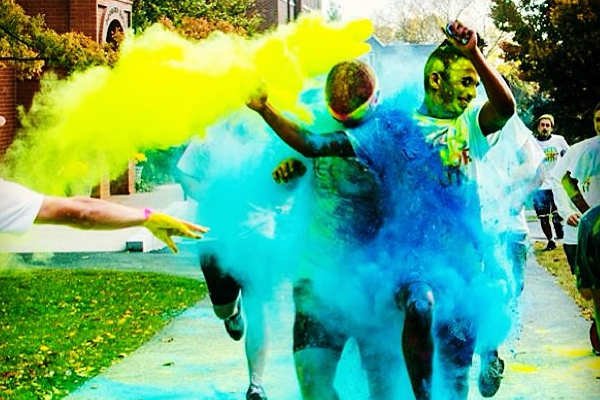
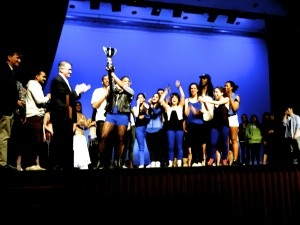

-
An Assisting Hand
The motto of Theta Chi Fraternity is "an assisting hand", and so it's only natural that the Epsilon Theta Chapter devotes a significant portion of its time to philanthropy and service. Below are just a few of the ways the brothers of Theta Chi are able to give back to the community. If you'd like to get in touch with the spring 2014 philanthropy chairs, Krishna Soni and Evan Balmuth, you can reach them at this email address.
-
Tufts Prism Run
Tufts Prism Run, Tufts' first ever campus-wide paint run, took place on October 27. Inspired by the Indian holiday Holi, the Tufts Prism Run had participants running, jogging, walking, or somersaulting through Tufts campus showered by an array of washable colored powders. Over four thousand dollars were raised at the event for Direct Relief, a non-profit organization aiming to increase the quality of life of people around the world by providing medical supplies to local, national, and international health providers. Check out the Tufts Daily's coverage of the Prism Run here or look at pictures from the event here!
-
Tufts' Best Dance Crew
Every year, Tufts' many dance groups come together to compete in front of an audience of students who, at the end of the show, will cast their votes and decide who deserves to be awarded the title and trophy of Tufts' Best Dance Crew! The proceeds from last year's show were donated to Habitat for Humanity. This year, all money raised will go to the Brain and Behavior Foundation to benefit mental health research. Check back soon for more announcements about the Spring 2014 show.
 -
Headshaving

Every spring, Theta Chi brothers pick a cause and shave their heads to raise money for it. Last spring, the brothers donated $800 to One Fund Boston, an organization that provides relief for families affected by the attack on the Boston Marathon. USA Today covered the story here. Left, brother Jon Levinson, a member of the Tufts Marathon Team, comes up with the dumbest haircut he can think of for brother Jeff Aalberg.
-
Other Causes Theta Chi Has Recently Supported:
- American Heart Association (Our National Charity)
- Turkish Red Crescent
- Bike and Build
- Somerville Homeless Coalition
- Eagle Eye Institute
- Let There Be Sight
- Halloween on the Hill
- National Collegiate Volunteers
- Jumpstart
- Relay for Life
- Leonard Carmichael Society
- Walk for Lily
- Tufts Kids' Day
- Haitian Coalition of Somerville